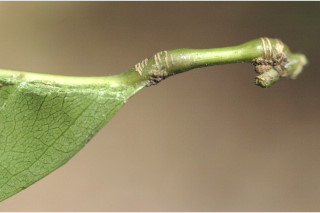
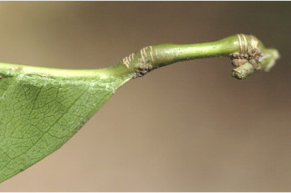
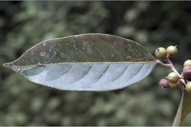
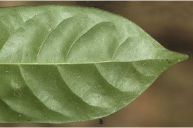
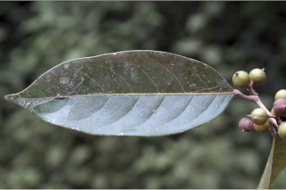
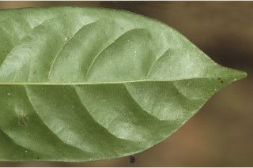

Trees up to 15 m tall.
15 ಮೀ.ವರೆಗೆ ಬೆಳೆಯುವ ಮರಗಳು.
15 മീറ്റര്വരെ ഉയരമുളള മരങ്ങള്.
மரங்கள், 15 மீ., உயரம் வரை வளரக்கூடியது
Bark smooth to shallowly fissured, brownish; blaze pink.
ತೊಗಟೆ ಕಂದು ಬಣ್ಣದಲ್ಲಿದ್ದು ನಯವಾಗಿರುತ್ತದೆ; ಕಚ್ಚು ಮಾಡಿದ ಜಾಗ ನಸುಗೆಂಪು ಬಣ್ಣ ಹೊಂದಿರುತ್ತದೆ.
തവിട്ട് നിറത്തിലുളള മിനുസമാര്ന്ന പുറംതൊലി; വെട്ടുപാടിന് പിങ്ക്നിറം.
மரத்தின் பட்டை வழுவழுப்பானது, ப்ரவுன் நிறமானது; உள்பட்டை பிங்க் நிறமானது.
Branchlets terete, glabrous.
ಕಿರುಕೊಂಬೆಗಳು ದುಂಡಾಗಿದ್ದು ರೋಮರಹಿತವಾಗಿರುತ್ತವೆ.
അരോമിലമായ, ഉരുണ്ട ഉപശാഖകള്.
சிறிய நுனிக்கிளைகள் குறுக்குவெட்டுத் தோற்றத்தில் வளையமானது, உரோமங்களற்றது.
Leaves simple, alternate, spiral; stipules oblong-lanceolate, acute, caducous; petiole 0.7-1.3 cm long, canaliculate, swollen at both ends, glabrous; lamina 7.5-17 x 3-7.5 cm, narrow oblong to narrow elliptic, apex gradually acuminate to caudate - acuminate with blunt tip, base acute to rounded, chartaceous, glabrous; midrib raised above; secondary_nerves 6-9 pairs; tertiary_nerves weakly percurrent.
ಎಲೆಗಳು ಸರಳವಾಗಿದ್ದು, ಪರ್ಯಾಯ ಮತ್ತು ಸುತ್ತು ಜೋಡನಾ ಮಾದರಿಯಲ್ಲಿರುತ್ತವೆ. ಕಾವಿನೆಲೆಗಳು ಚತುರಸ್ರ-ಭರ್ಜಿ ಆಕಾರದಲ್ಲಿದ್ದು ಚೂಪಾಗಿರುತ್ತವೆ ಹಾಗೂ ಉದುರಿ ಹೋಗುವಂತವು; ತೊಟ್ಟುಗಳು 0.7-1.3 ಸೆಂ.ಮೀ. ವರೆಗಿನ ಉದ್ದವಿದ್ದು ಕಾಲುವೆ ಗೆರೆ ಸಮೇತವಿರುತ್ತವೆ ಹಾಗೂ ಎರಡೂ ತುದಿಯಲ್ಲಿ ಊದಿಕೊಂಡಿರುತ್ತವೆ ಮತ್ತು ರೋಮರಹಿತವಾಗಿರುತ್ತವೆ; ಪತ್ರಗಳು 7.5 -17 X3-7.55 ಸೆಂ. ಮೀ. ಗಾತ್ರ, ಸಂಕುಚಿತ ಚತುರಸ್ರ ದಿಂದ ಹಿಡಿದು ಸಂಕುಚಿತ ಅಂಡವೃತ್ತ ಮಾದರಿಯ ಆಕಾರದಲ್ಲಿದ್ದು, ಮೊಂಡಾಗ್ರವುಳ್ಳ, ಹಂತ ಹಂತವಾಗಿ ಕ್ರಮೇಣ ಚೂಪಾಗುವುದರಿಂದ ಹಿಡಿದು ಬಾಲ ರೂಪಿ-ಕ್ರಮೇಣ ಚೂಪಾಗುವ ಮಾದರಿಯ ತುದಿ, ಚೂಪಾದುದರಿಂದ ಹಿಡಿದು ದುಂಡಾದ ಬುಡ, ಕಾಗದವನ್ನೋಲುವ ಮೇಲ್ಮೈ ಹೊಂದಿದ್ದು ರೋಮರಹಿತವಾಗಿರುತ್ತವೆ; ಮಧ್ಯನಾಳ ಪತ್ರದ ಮೇಲ್ಭಾಗದಲ್ಲಿ ಉಬ್ಬಿರುತ್ತದೆ; ಎರಡನೇ ದರ್ಜೆಯ ನಾಳಗಳು 6 - 9 ಜೋಡಿಗಳಿರುತ್ತವೆ; ಮೂರನೇ ದರ್ಜೆಯ ನಾಳಗಳು ದುರ್ಬಲವಾಗಿ ಎಲೆ ದಿಂಡಿಗೆ ಅಡ್ಡವಾಗಿ ಕೂಡುವಂತಹ ಮಾದರಿಯವು.
ലഘുവായ ഇലകള്, ഏകാന്തരക്രമത്തില്, സര്പ്പിളമായി അടുക്കിയ വിധത്തിലാണ്; എളുപ്പം കൊഴിഞ്ഞ് വീഴുന്ന, ആയതാകാര-കുന്താകാരവും കൂര്ത്തതുമായ അനുപര്ണ്ണങ്ങള്; രണ്ടറ്റവും വീര്ത്ത്, അരോമിലമായതും ചാലുളളതുമായ, ഇലഞെട്ടിന് 0.7 സെ.മീ മുതല് 1.3 സെ.മീ വരെ നീളം; പത്രഫലകത്തിന് 7.5 സെ.മീ മുതല് 1.7 സെ.മീ വരെ നീളവും 3 സെ.മീ മുതല് 7.5 സെ.മീ വരെ വീതിയും, വീതികുറഞ്ഞ ആയതാകാരം തൊട്ട് വീതികുറഞ്ഞ ദീര്ഘവൃത്താകാരംവരെയുമാണ്, പത്രാഗ്രം ദീര്ഘമോ മുനപ്പില്ലാത്ത ചെറുവാലോട് കൂടിയതോ ആണ്, പത്രാധാരം നിശിതം തൊട്ട് വൃത്താകാരംവരെയാകാം, കടലാസ്പോലത്തെ പ്രകൃതം, അരോമിലം; മുകളില് ഉയര്ന്നുനില്ക്കുന്ന മുഖ്യസിര; 6 മുതല് 9 വരെ ജോഡി ദ്വിതീയ ഞരമ്പുകള്; ലഘുവായ പെര്കറന്റ് വിധത്തിലുളള ത്രിതീയ ഞരമ്പുകള്.
இலைகள் தனித்தவை, மாற்றுஅடுக்கமானவை, சுழல் போன்று அமைந்தவை; இலையடிச்செதில் நீள்சதுர-ஈட்டி வடிவானது, நுனி கூரியது, எளிதில் உதிரக்கூடியது; இலைக்காம்பு 0.7-1.3 செ.மீ. நீளமானது, குறுக்குவெட்டுத் தோற்றத்தில் கேனாலிகுலேட், இருமுனைகளும் உப்பியது, உரோமங்களற்றது; இலை அலகு 7.5-17 X 3-7.5 செ.மீ., குறுகிய நீள்சதுர முதல் நீள்வட்ட வடிவானது, அலகின் நுனியில் நீண்ட அதிக்கூரியது முதல் வால்-அதிக்கூரியது அதன் முனை மொட்டையானது, அலகின் தளம் கூரியது முதல் வட்டமானது, சார்ட்டேசியஸ், கீழ்பரப்பு உரோமங்களற்றது; மையநரம்பு அலகின் மேற்பரப்பைவிட மேல் எழும்பியது; இரண்டாம் நிலை நரம்புகள் 6-9 ஜோடிகள்; மூன்றாம் நிலை நரம்புகள் சிறிது அகன்ற பெர்க்கரண்ட் போன்றது.
Flowers unisexual, dioecious; male flowers in axillary catkins; female flowers in condensed cymes.
ಹೂಗಳು ಏಕಲಿಂಗಿಗಳಾಗಿದ್ದು ಹೆಣ್ಣು ಮತ್ತು ಗಂಡು ಹೂಗಳು ಪ್ರತ್ಯೇಕ ಸಸ್ಯಗಳಲ್ಲಿರುತ್ತವೆ; ಗಂಡು ಹೂಗಳು ಅಕ್ಷಾಕಂಕುಳಿನಲ್ಲಿರುವ ಪುಷ್ಪದಳ ರಹಿತ ಏಕಲಿಂಗಿ ಹೂಗಳುಳ್ಳ ಕದಿರುಮಂಜರಿಗಳಲ್ಲಿರುತ್ತವೆ;ಹೆಣ್ಣು ಹೂಗಳು ಸಂಕ್ಷೇಪಗೊಂಡ ಕದಿರು ಮಂಜರಿಯಲ್ಲಿರುತ್ತವೆ.
പൂക്കള് ഏകലിംഗികളാണ്, ഡയീഷ്യസും; ആണ്പൂക്കള് കക്ഷീയ കാറ്റ്കിനുകളിലുണ്ടാകുന്നു; പെണ്പൂക്കള് കുറിയ സൈമുകളില് ഉണ്ടാകുന്നു.
மலர்கள் ஓர்பாலானவை, ஈரகம் கொண்டவை; ஆண்மலர்கள் தண்டின் இலைக்கோணங்களில் காணப்படும் கேட்கின்; பெண்மலர்கள் குட்டையான சைம்.
Capsule smooth, globose, to 1.3 cm across, 2-4 seeded.
ಸಂಪುಟ ಫಲಗಳು ನಯವಾಗಿದ್ದು,ಗೋಳಾಕಾರ ಹೊಂದಿದ್ದು 1.3 ಸೆಂ.ಮೀ. ವರೆಗಿನ ಅಡ್ಡಗಳತೆಯನ್ನು ಹೊಂದಿರುತ್ತವೆ ಹಾಗೂ 2-4 ಬೀಜಗಳನ್ನೊಳಗೊಂಡಿರುತ್ತವೆ.
2 മുതല് 4 വരെ വിത്തുളള കായ, 1.3 സെ.മീ വരെ കുറുകേയുളള, മിനുസമാര്ന്ന ഗോളാകാര കാപ്സ്യൂള് ആണ്.
வெடிகனி (கேப்சூல்), வழுவழுப்பானது, கோளவடிவானது, 1.3 செ.மீ. குறுக்களவுடையது, 2-4 விதைகளையுடையது.


 

 


